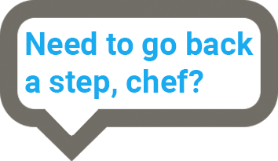

blanks space 1
Once ye think you’ve collected all the fat from the pan use the spatula to place the grilled cheese in the centre of the pan (this is the hottest part of the pan) while applying the same amount of pressure from before. Do this for somewhere between4-6 minutes before flipping it with the spatula and you should see it is fully cooked as it should be some kind of crispy golden, brown. (If not, keep going for a minute or two more just in case as ye do not want it to be rotten!).
Repeat the same process on the uncooked side for around 2-4 minutes and hopefully you see the same, brilliant result! Now take out the grilled cheese from the pan, placing on ye plate and turn off the hob. By the time ye have done that the grilled cheese should be cooled down enough to be cut in ye most desired shape! Now enjoy ye earnings and don’t leave the cleaning upto ye mum!
Blanks Space 2
A true sailor knows that a grilled cheese is nearly finished cooking on one side because there isn’t as much sizzling.as when you place the grilled cheese in ye pan.
Thanks thee inspiration for this website
Blanks space 3
Authors and Copyright
Blanks space 4